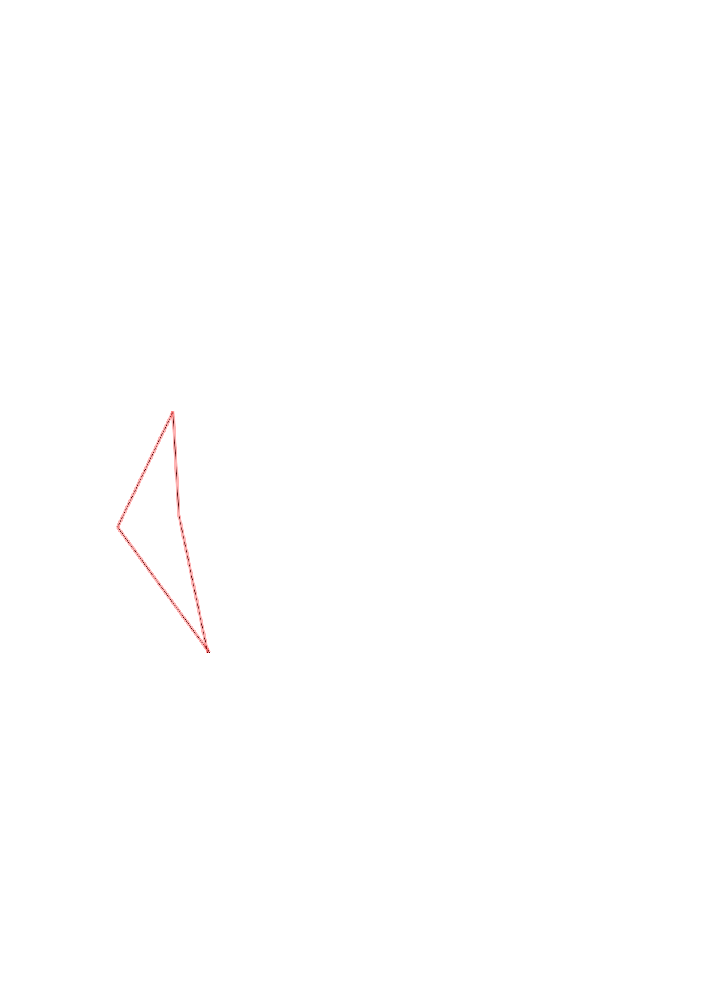
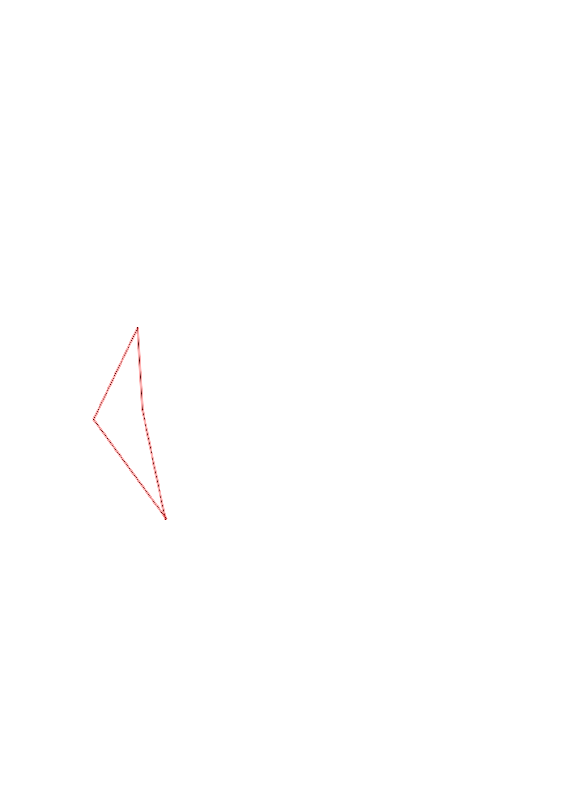
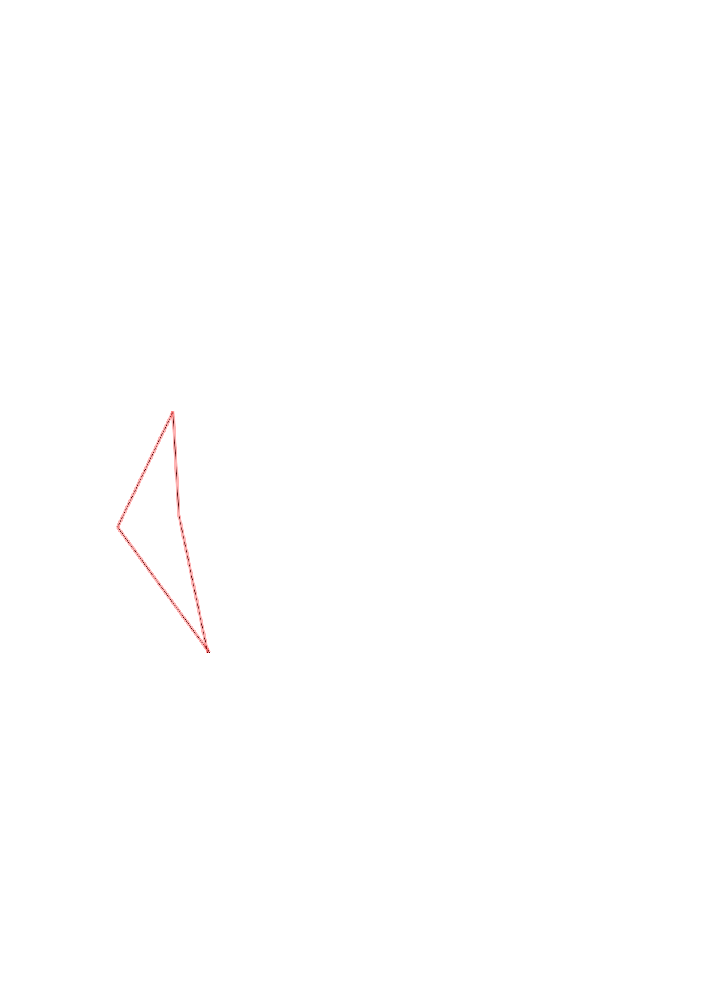

| Control | Points | Time Punched | Distance | Your Time | Pace | Place | Fastest Time | Median Time | % Behind Fastest |
|---|---|---|---|---|---|---|---|---|---|
| 58 | 50 | 0.63 | 0:15:33 | 24:40 | 1 / 1 | 0:15:33 | 0:15:33 | 0% | |
| 53 | 50 | 0.46 | 0:09:38 | 20:56 | 2 / 2 | 0:05:00 | 0:07:19 | 92% | |
| 72 | 70 | 0.57 | 0:20:48 | 36:29 | 1 / 1 | 0:20:48 | 0:20:48 | 0% | |
| Finish | 0 | 0.69 | 0:10:56 | 15:50 | 1 / 1 | 0:10:56 | 0:10:56 | 0% |
